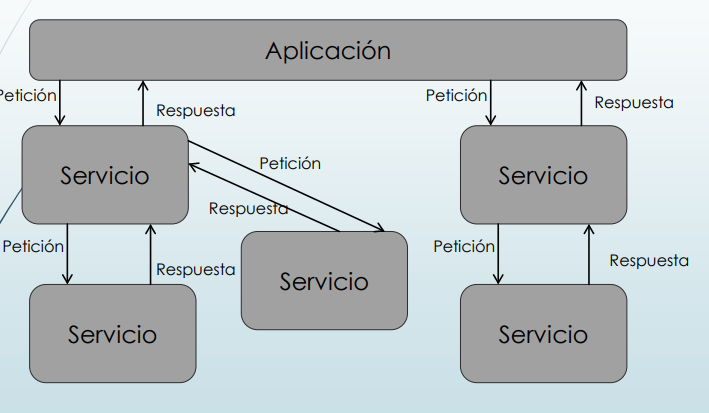

Arquitectura cliente / servidor
Arquitectura Cliente servidor. Esta arquitectura consiste básicamente en un cliente que realiza peticiones a otro programa (el servidor) que le da respuesta. Aunque esta idea se puede aplicar a programas que se ejecutan sobre una sola computadora es más ventajosa en un sistema operativo multiusuario distribuido a través de una red de computadoras. La interacción cliente-servidor es el soporte de la mayor parte de la comunicación por redes. Ayuda a comprender las bases sobre las que están construidos los algoritmos distribuidos.
Arquitectura basada en capas
La arquitectura en capas consta en dividir la aplicación en capas, con la intención de que cada capa tenga un rol muy definido, como podría ser, una capa de presentación (UI), una capa de reglas de negocio (servicios) y una capa de acceso a datos (DAO), sin embargo, este estilo arquitectónico no define cuantas capas debe de tener la aplicación, sino más bien, se centra en la separación de la aplicación en capas (Aplica el principio Separación de preocupaciones (SoC)).
Arquitectura orientada a servicios
 La arquitectura orientada a los servicios (SOA) es un tipo de diseño de software que permite reutilizar sus elementos gracias a las interfaces de servicios que se comunican a través de una red con un lenguaje común. Un servicio es una unidad autónoma de una o más funciones del software diseñada para realizar una tarea específica, como recuperar cierta información o ejecutar una operación. Contiene las integraciones de datos y código que se necesitan para llevar a cabo una función empresarial completa y diferenciada. Se puede acceder a él de forma remota e interactuar con él o actualizarlo de manera independiente.
Arquitectura en 3 capas / n capas
La arquitectura de tres niveles es una arquitectura de software de aplicación bien establecida que separa las aplicaciones en tres niveles de informática lógica y física: el nivel de presentación o la interfaz de usuario, el nivel de aplicación o donde se procesan los datos, y el nivel de datos donde se almacenan y gestionan los datos asociados con la aplicación.